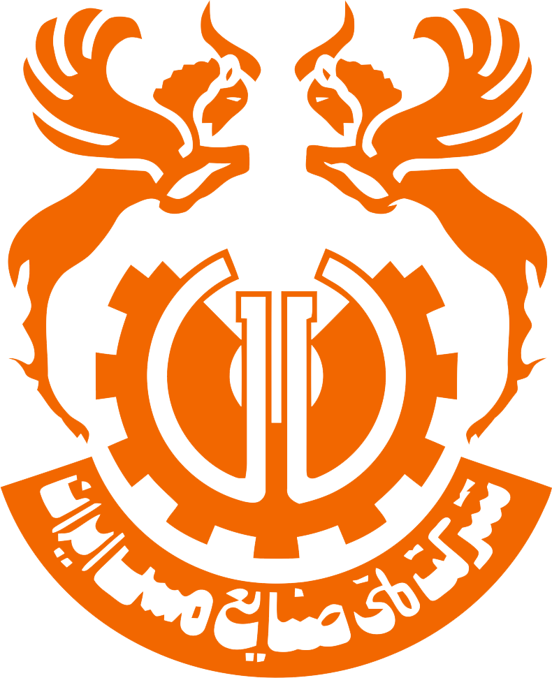

گزارش
عملکرد
واحد تربیت بدنی مجتمع مس درآلو | سال ۱۴۰۴

8
مقام کسب شده
5
تیم تشکیل شده
12
مسابقه برگزار شده
420
نفر استفاده کننده
خلاصه اقدامات انجام شده در سال ۱۴۰۴
01
بستن قرارداد با باشگاههای ورزشی شهرهای رابر، بافت، بردسیر، راین و کرمان جهت ارائه خدمات بدنسازی، استخر، سالن ورزشی و ووشو به کارکنان.
02
خرید و راهاندازی دستگاه ثبت اثر انگشت پرسنل جهت تجهیز باشگاههای طرف قرارداد.
03
تشکیل تیم فوتسال مجتمع و آغاز فعالیت رسمی تیم.
04
برگزاری مسابقات بین مجتمعی و کسب مقام اول فوتسال و مقام دوم والیبال.
05
برگزاری مسابقات بین اموری در داخل مجتمع با مشارکت کارکنان.
06
برگزاری مسابقات انتخابی و تشکیل تیم تنیس روی میز مجتمع.
07
خرید پک ورزشی برای مدیران و رؤسای مجتمع.
08
پیگیری و تعیین ساختمان مستقل امور تربیت بدنی مجتمع.
09
استقلال واحد ورزش مجتمع درآلو از مجتمع سرچشمه.
10
برگزاری مسابقات دو و میدانی و فوتبال هفت نفره در شهرستان رابر.
11
تشکیل تیم فوتبال هفت نفره جهت حضور برای نخستین بار در مسابقات ایمیدرو.
12
حمایت از ورزشکاران تیم فوتسال منتخب شهرستان رابر.
13
تشکیل تیم شطرنج مجتمع و شرکت در مسابقات کارگری استان.
14
خرید البسه و تجهیزات ورزشی جهت تجهیز و تجلیل از تیمهای ورزشی مجتمع.
15
پوشش رسانهای رویدادهای ورزشی مجتمع از طریق خبرگزاریها و رسانههای ورزشی.